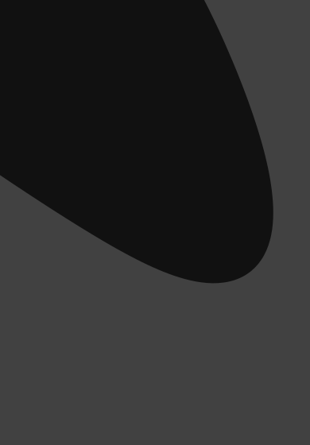
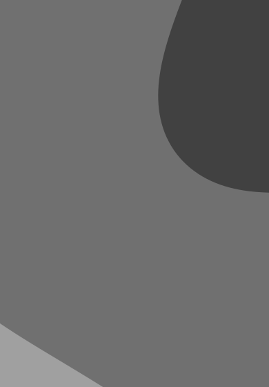
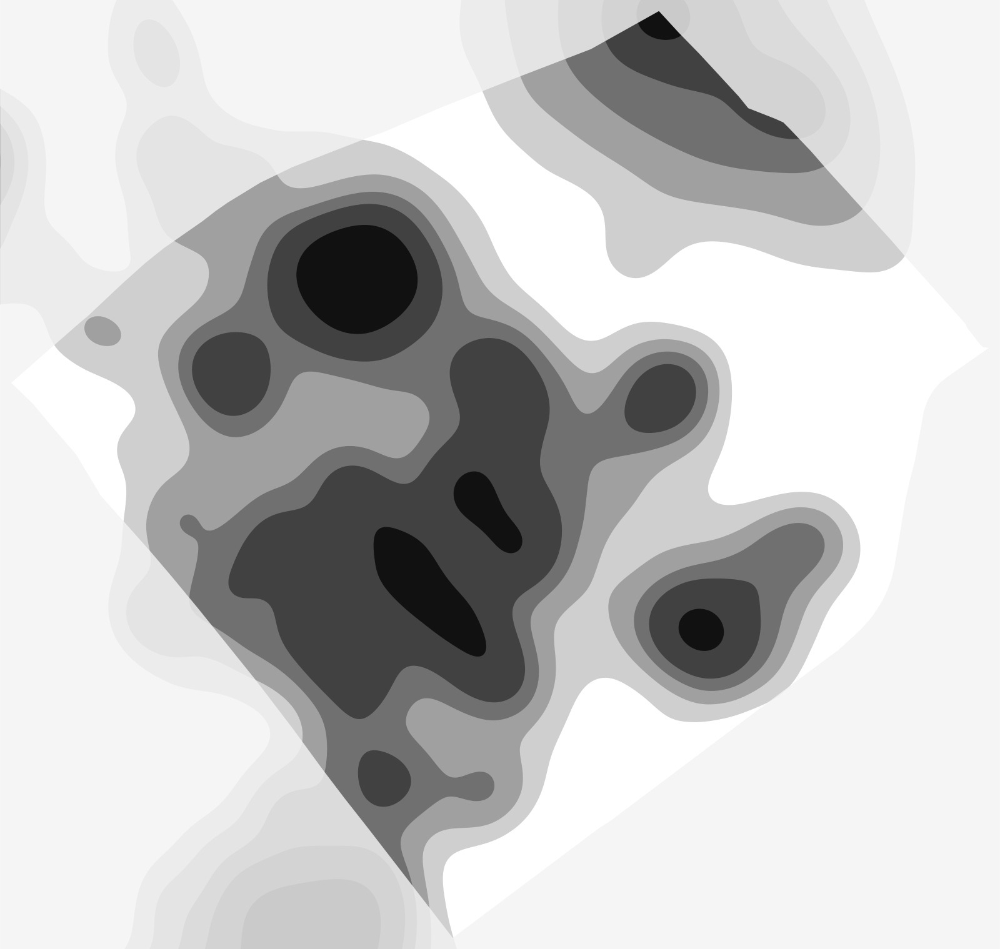

The hider sends a square of the heatmap with them somewhere inside it. The stalkers turn on the heatmap and look for that pattern. Built from OpenStreetMap. The look is settled; what is left is checking the patches can be found.
Decided
White → black, in six flat tiers like a topographic map, fixed to the ground: a spot keeps its colour at every zoom.
Smooth, between the two smoothest tried: busy places merge into broad hills.
Drawn as vector shapes: the tiers' edges are smooth curves, sharp at any zoom.
The square the hider sends is one phone screen at the closest zoom: 80 × 115 m.
Roads leave no mark. Only places people go to, sit at or work in make heat.
The square is centred on the hider. No shift: the smooth heat already blurs where in the square they are.
The app draws the square itself from the hider's position, heatmap only. The stalkers' phones get the picture, never the position.
The hints map does not change.
Stalkers get a Heatmap switch on the map screen that stays there.
The hider sees the heatmap only after the question has been asked.
No "find it" button and no compare mode: matching it by eye is the game.
The campus
White is the quietest third of campus. Above it the tiers rise in even steps of heat, the top three and the two below them merged, then the greys spread evenly over the six.
Try it: find these four
Four hiders sent their square at the closest zoom. Look for them on the map below, then check.

1

234
The whole campus. Scroll to look around.

Pavillon Adrien-Pouliot (PLT), in the middle of campus.
The west edge of campus, by the border street.
The PEPS, on the biggest hill.
A quiet field in the south. Almost all white: it only says the hider is somewhere quiet.
How the heat is made
Everything comes from OpenStreetMap (fetched 2 October 2026), baked once onto a 2 m grid:
Places people go: doors, bus stops, cafés and restaurants, shops, àVélo stations, libraries.
Street furniture: benches, bike racks, picnic tables, bins.
Buildings and grounds: a pavilion is warm, a house barely, a sports field a little.
Footpaths, faintly. Streets, service roads and parking lanes not at all.
By hand: the corner of Chemin Sainte-Foy and Avenue Myrand. A busy place right at the corner, rising as a hill, on an even raise of about two tiers that reaches 350 m around the corner and about 450 m east along Myrand, narrowing. White ground is left between it and the PEPS.
That is blurred twice, about 45 m for each place and 110 m for each district, cut into tiers and traced as smooth curves.